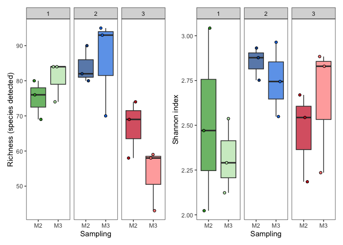

Organisation: Data Science Platform
Responsibles: Albert Pallejà Caro (apca@dtu.dk)
Alexander Zubov
(alzub@dtu.dk)
Edir Sebastian Vidal Casto
(s243564@student.dtu.dk)
Juliana Assis (jasge@dtu.dk)
This markdown is to calculate the alpha diversity of the samples as Richness (number of species detected per sample) and as Shannon diversity index (accounts for number of species detected and abundance distribution). These calculations are based on the species abundance table. Here we will plot Richness and Shannon index, and we will compare these diversity metrics between the study groups.
🧬 Alpha Diversity: Richness vs. Shannon Index
Alpha diversity refers to the diversity within a single sample or environment. It captures two main aspects:
Richness:
The number of different species (or operational taxonomic units, OTUs) present in a sample.
👉 It tells you how many types of organisms there are, but not how evenly they are distributed.Shannon Diversity Index:
A metric that combines richness and evenness (the relative abundance of species).
👉 It increases when both the number of species and the balance between their abundances increase.
Mathematically, it is calculated as:H′ = − ∑(pi×log(pi))
Where: H′ is the Shannon Diversity Index. p**i is the proportion of individuals belonging to species i. l**n is the natural logarithm.
Interpretation: The value of H’ typically ranges from 0 to a maximum value (which depends on the number of species and their abundance). A higher value indicates greater diversity, while a lower value indicates less diversity
📝 Summary
| Metric | What it measures | Sensitive to | Value range |
|---|---|---|---|
| Richness | Number of species | Rare species | 1 to N (total taxa) |
| Shannon | Richness + Evenness | Common + rare species | ≥0 (higher = more diverse) |
Alpha Diversity Tutorial#
Packages#
Loading libraries needed. They were installed in the codespace when developed.
library(ggplot2)
library(patchwork)
library(vegan)
library(FSA)
Load data objects#
Load species abundance, taxonomical annotation and metadata file
abundance <- readRDS(file = "../data/MetaphlanAbundance_Species.rds")
rownames(abundance) <- gsub("_SRR_db1.metaphlan", "", rownames(abundance))
# Taxonomical annotation
annotation <- readRDS(file = "../data/MetaphlanAnnotations_Species.rds")
# Metadata
metadata <- read.table(file = "../data/metadata.tsv", header = TRUE,
sep = "\t",
quote = "",
row.names = NULL)
rownames(metadata) <- metadata$Sample
💡 Tip: You can use the command dim to visualize the
dimension of the object. Try it yourself.
dim(abundance)
dim(metadata)
Take only samples with sequencing and metadata information#
abundance <- abundance[rownames(metadata), ]
Calculate Alpha Diversity#
We calculate Richness and Shannon index using vegan package and added both to a dataframe
📘 Note: vegan: an R package for community ecologists Vegan.
Ordination methods, diversity analysis and other functions for community and vegetation ecologists
alpha_div <- data.frame(
Richness = rowSums(abundance > 0),
Shannon = vegan::diversity(abundance,
index = "shannon"),
row.names = rownames(abundance)
)
Plot alpha diversity measurements#
Prepare plot dataframe
We join the alpha diversity data with the grouping file (often called metadata)
plot_data <- cbind(alpha_div,
metadata$Area,
metadata$Sampling,
paste(metadata$Area, metadata$Sampling,
sep = "_")
)
colnames(plot_data) <-
c("Richness", "Shannon", "Area", "Sampling_Date", "Area_Sampling")
write.csv(plot_data,
file = "../results/report/01_Alpha-diversity/01_Alpha_diversity.csv",
row.names = TRUE,
quote = FALSE)
Create boxplots#
colors <- c("1_M2" = "#349F2C", "1_M3" = "#BAE4B3",
"2_M2" = "#0F5096", "2_M3" = "#1779E3",
"3_M2" = "#CA0020", "3_M3" = "#FF8784")
richness_boxplot <- ggplot(plot_data,
aes(x = Sampling_Date,
y = Richness)) +
geom_boxplot(aes(fill = Area_Sampling),
outliers = FALSE,
alpha = 0.7) +
geom_point(aes(fill = Area_Sampling),
shape = 21,
position = position_jitter(width = 0.25, height = 0)) +
theme_bw() +
theme(legend.position = "none",
panel.grid.major = element_blank(),
panel.grid.minor = element_blank()) +
scale_fill_manual(values = colors) +
labs(x = "Sampling",
y = "Richness (species detected)") +
facet_grid(. ~ Area)
Shannon#
shannon_boxplot <- ggplot(plot_data,
aes(x = Sampling_Date,
y = Shannon)) +
geom_boxplot(aes(fill = Area_Sampling),
outliers = FALSE,
alpha = 0.7) +
geom_point(aes(fill = Area_Sampling),
shape = 21,
position = position_jitter(width = 0.25, height = 0)) +
theme_bw() +
theme(legend.position = "none",
panel.grid.major = element_blank(),
panel.grid.minor = element_blank()) +
scale_fill_manual(values = colors) +
labs(x = "Sampling",
y = "Shannon index") +
facet_grid(. ~ Area)
richness_boxplot +
shannon_boxplot

Save#
ggsave(filename = "../results/report/01_Alpha-diversity/02_alphadiv_boxplots.png",
width = 8,
height = 4,
dpi = 300)
Statistical comparison#
We have three areas that we want to compare, we will use a non-parametric test for more than 2 groups: Kruskal-Wallis. We are testing whether there are differences among the three areas
kruskal.test(Richness ~ Area,
plot_data)
##
## Kruskal-Wallis rank sum test
##
## data: Richness by Area
## Kruskal-Wallis chi-squared = 10.554, df = 2, p-value = 0.005107
❓ Question: Is Richness significantly different among the areas?
When a Kruskal-Wallis test shows that there are significant differences between groups, you need a post-hoc test to determine which specific groups differ. Since Kruskal-Wallis is non-parametric, the appropriate post-hoc test is also a non-parametric - dunnTest. We correct for multiple testing using Benjamini-Hochberg (BH) procedure, which is a method used to control the False Discovery Rate (FDR) in multiple hypothesis testing
✅ Post-hoc Dunn’s Test — Hypothesis Explanation
Dunn’s test is a non-parametric post-hoc test used after a Kruskal-Wallis test, to determine which specific groups are significantly different from each other.
💡 Why Dunn’s Test?
Kruskal-Wallis tells you at least one group differs, but not which one.
Dunn’s test compares all pairwise group combinations.
It adjusts p-values for multiple comparisons (e.g., Bonferroni, Holm, or FDR).
Perform post-hoc Dunn’s test#
dunnTest(Richness ~ Area,
plot_data,
method = "bh")
## Dunn (1964) Kruskal-Wallis multiple comparison
## p-values adjusted with the Benjamini-Hochberg method.
## Comparison Z P.unadj P.adj
## 1 1 - 2 -0.9758495 0.329139073 0.329139073
## 2 1 - 3 2.1956613 0.028116197 0.042174296
## 3 2 - 3 3.1715107 0.001516483 0.004549448
Differences occur between 1-3 and 2-3
❓ Question: Is it the same for Shannon?
kruskal.test(Shannon ~ Area,
plot_data)
##
## Kruskal-Wallis rank sum test
##
## data: Shannon by Area
## Kruskal-Wallis chi-squared = 4.8187, df = 2, p-value = 0.08987
Almost significant!
When it is not significant, we don’t needed to test between groups, but lets double check:
dunnTest(Shannon ~ Area,
plot_data,
method = "bh")
## Dunn (1964) Kruskal-Wallis multiple comparison
## p-values adjusted with the Benjamini-Hochberg method.
## Comparison Z P.unadj P.adj
## 1 1 - 2 -2.1629523 0.03054485 0.09163455
## 2 1 - 3 -0.7570333 0.44902991 0.44902991
## 3 2 - 3 1.4059190 0.15974818 0.23962228
No significant differences, but comparison of 1-3 is almost significant.
🧪 Why Can Richness Differ Significantly, but Shannon Doesn’t?
Here’s why this happens:
✅ 1. Richness varies — but community evenness doesn’t
If Area A has more species than Area B (higher richness), that’s easy to detect statistically.
But if both areas still have similar species dominance patterns (i.e. same evenness), Shannon may not differ.
✅ 2. Shannon is more “stable” because it includes evenness
Shannon accounts for how balanced species proportions are.
If one area has a few rare taxa (extra richness) but still dominated by a few taxa, the Shannon index may not change much.
✅ 3. Richness is more sensitive to sampling depth or rare species
Richness increases just by detecting one more species.
Shannon barely moves unless species abundances change substantially.
Richness is significantly different between areas, but Shannon is not, because the evenness of species abundances is similar across areas.
Printing all package versions (good practice to ensure reproducibility)#
## R version 4.3.1 (2023-06-16)
## Platform: aarch64-apple-darwin20 (64-bit)
## Running under: macOS 26.3.1
##
## Matrix products: default
## BLAS: /Library/Frameworks/R.framework/Versions/4.3-arm64/Resources/lib/libRblas.0.dylib
## LAPACK: /Library/Frameworks/R.framework/Versions/4.3-arm64/Resources/lib/libRlapack.dylib; LAPACK version 3.11.0
##
## locale:
## [1] C.UTF-8/C.UTF-8/C.UTF-8/C/C.UTF-8/C.UTF-8
##
## time zone: Europe/Copenhagen
## tzcode source: internal
##
## attached base packages:
## [1] stats graphics grDevices utils datasets methods base
##
## other attached packages:
## [1] FSA_0.10.0 vegan_2.6-8 lattice_0.22-6 permute_0.9-7
## [5] patchwork_1.3.0 ggplot2_3.5.1
##
## loaded via a namespace (and not attached):
## [1] Matrix_1.6-1.1 gtable_0.3.6 dplyr_1.1.4 compiler_4.3.1
## [5] tidyselect_1.2.1 parallel_4.3.1 cluster_2.1.6 textshaping_0.4.0
## [9] systemfonts_1.1.0 splines_4.3.1 scales_1.3.0 yaml_2.3.10
## [13] fastmap_1.2.0 R6_2.5.1 labeling_0.4.3 generics_0.1.3
## [17] knitr_1.49 MASS_7.3-60 tibble_3.2.1 munsell_0.5.1
## [21] pillar_1.9.0 rlang_1.1.4 utf8_1.2.4 xfun_0.49
## [25] cli_3.6.3 withr_3.0.2 magrittr_2.0.3 mgcv_1.9-1
## [29] digest_0.6.37 grid_4.3.1 nlme_3.1-166 lifecycle_1.0.4
## [33] vctrs_0.6.5 evaluate_1.0.1 glue_1.8.0 farver_2.1.2
## [37] ragg_1.3.3 dunn.test_1.3.6 fansi_1.0.6 colorspace_2.1-1
## [41] rmarkdown_2.29 tools_4.3.1 pkgconfig_2.0.3 htmltools_0.5.8.1